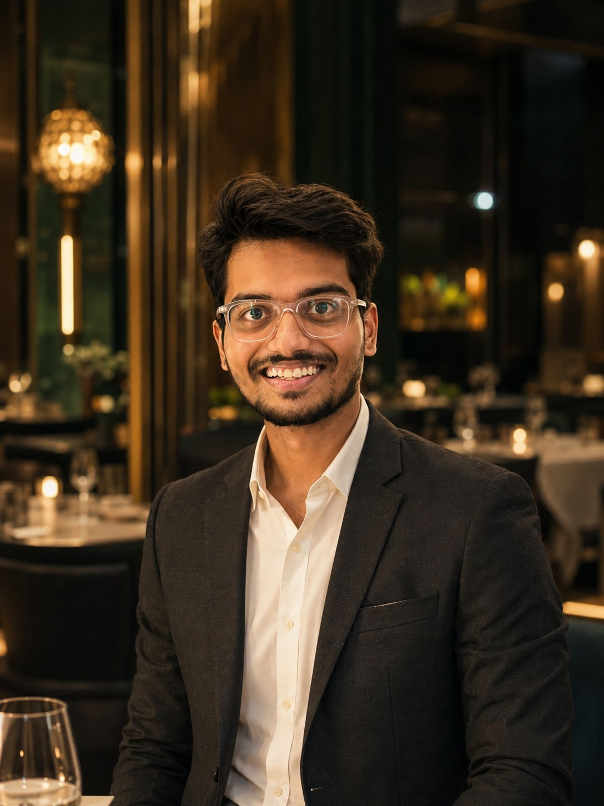

A Decade of Gastronomic Distinction
PTR Grand was conceived as a sanctuary for those who appreciate the poetry of fine dining. Founded in the heart of Metropolis, our vision was simple yet radical: to eliminate the pretension of luxury while heightening its craft.
Over the past decade, PTR Grand has earned international acclaim for pioneering sustainable fine dining, forging direct partnerships with biodynamic farms, artisan fishermen, and boutique vineyards worldwide.

Food at its highest level is not merely sustenance; it is memory, emotion, and an invitation to slow time down.— General Manager & Executive Chef, PTR Grand

General Manager & Head Chef
Guiding PTR Grand with vision and passion, our management and culinary leadership team ensures every guest experiences world-class fine dining, impeccable wine service, and memorable hospitality.
Our commitment centers on respect for nature, artisanal technique, and crafting a unique culinary story for every guest who walks through our doors.
Our Philosophy
Hyper-Seasonal Sourcing
We collaborate directly with local micro-farmers who harvest crops at peak maturation, ensuring unmatched flavor intensity.
Bespoke Pairings
Our Sommelier team curates wine pairings that harmonize perfectly with every subtle flavor tone of our tasting courses.
Warm Elegance
Hospitality should feel like an extension of one’s home—gracious, attentive, and genuinely welcoming.